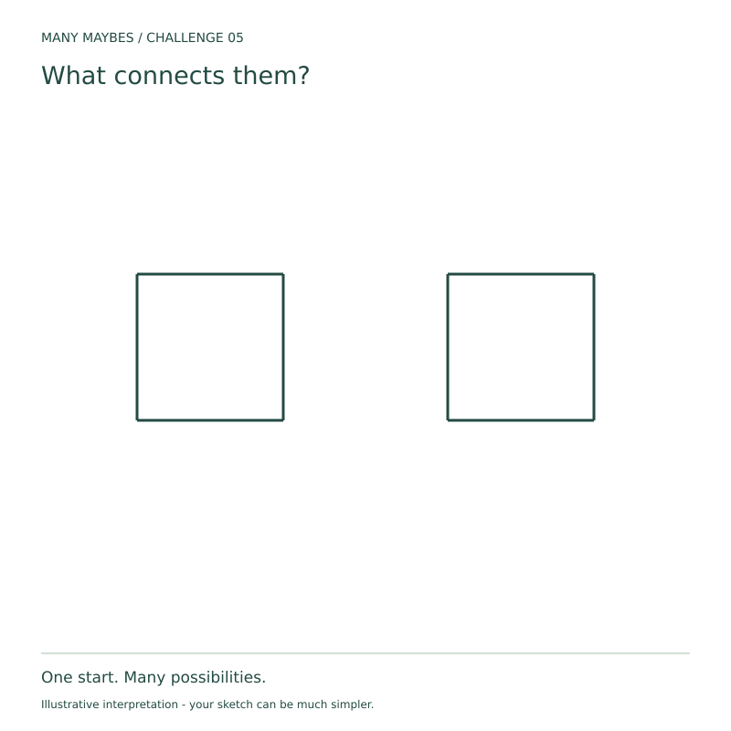

Challenge 05 · Change the relationship between elements
What connects them?
Keep both equal squares and their relative positions. Add at least two clues that reveal a relationship such as support, exchange, cause or comparison.

Your challenge
- Keep both original squares visible, equally sized and in their original relative positions.
- Add around or inside them. Do not cover or erase an original edge.
- Whole-starter rotation and uniform resizing are allowed; moving one square is not.
- Make a relationship visible: support, exchange, cause, comparison or representation. Add at least two clues.
Beginner route: list three ideas, then add just three clues to one. Drawing skill is optional; words, simple sketches and collage count.
Use freehand tools or turtle code in your browser. No installation or account needed.


Printable challenge PDF · Works offline.
Try before you peek?
Pause here if you want to discover your own interpretation first. When you are ready for inspiration, open this challenge’s section in the gallery. There is no single correct answer.
Optional progressive hints
- Name your first assumption.
- Change the relationship between elements. What evidence would make that reading plausible?
- Add one detail that changes the meaning of the whole image.
Reflect
What makes these two things belong together? Change only the connection: how does the story change?
Why this challenge?
After looking at context, empty space, scale and time, shift attention to how elements affect one another.
Share when ready
Keep your sketch and a sentence about what changed. To submit for review, open Share yours, select this challenge and sign in with Google. You can share your own work on Instagram and tag @trymanymaybe. Tagging does not automatically add your work to the gallery.
Explore the challenge collectionReady to see other possibilities?
Explore three illustrated interpretations and the thinking behind them. Your idea can be completely different.
Explore Challenge 05 in the gallery →This possibility is now in the gallery. View the example →
This possibility is now in the gallery. View the example →
This possibility is now in the gallery. View the example →
Starter image description
Two equal dark green square outlines sit side by side at the same height, separated by a wide blank space.
You can explore this challenge by imagining, describing your idea in words, or drawing. Share a drawing or text interpretation.